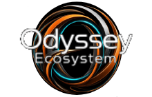
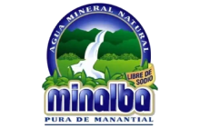
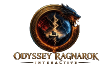
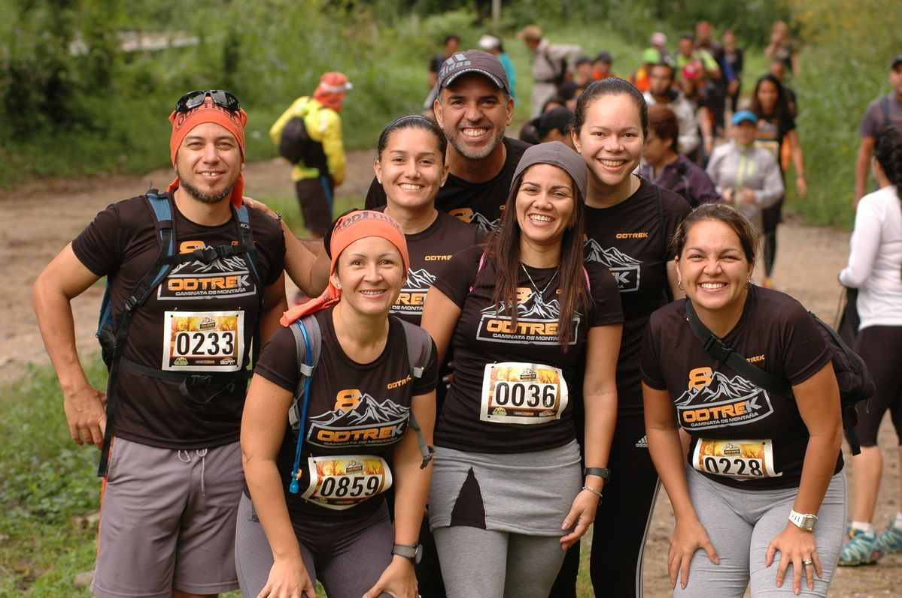
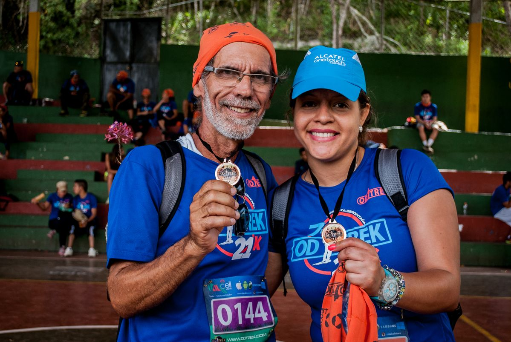
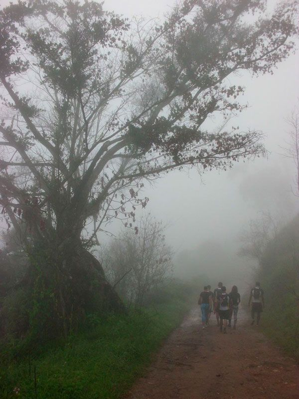

Producción de eventos que empujan los límites. Dieciséis años de historia, ocho ediciones del 21K, y un regreso en marcha.



Cada evento es una experiencia diseñada al detalle. Terreno real, comunidad real, celebraciones que se recuerdan.
El clásico de la casa. 21 kilómetros de montaña pura, con desniveles que separan a los que entrenan de los que sueñan.
Senderos técnicos, barro, raíces y ese sabor a victoria cuando cruzas la meta.
La ciudad se apaga, tú te enciendes. Carrera urbana bajo las luces.
Cerveza, gastronomía y música en vivo. La llegada del Reto Nocturno convertida en fiesta.
Ocho ediciones del ODTREK 21K. Cuatro eventos creados. Una pausa obligada en 2017 y un regreso que ya está en marcha. Esta es la historia de ODTREK.



Estamos expandiendo el universo ODTREK. Ropa técnica, cobertura periodística y nuevos deportes de aventura.
Ropa técnica de trail y lifestyle outdoor. Diseñada por corredores, para corredores.
Cobertura periodística y fotográfica profesional para eventos de terceros. Contamos tu historia con lente y pluma.
Nuevos eventos de escalada deportiva y surf para expandir nuestra comunidad de aventura.
Parapentismo y skateboarding: más formas de volar, rodar y romper límites con ODTREK.
Inscríbete en el newsletter para recibir primero las fechas, rutas y preventas cuando anunciemos el regreso. Sin spam, solo info de ODTREK.
Te avisamos primero cuando haya novedades.